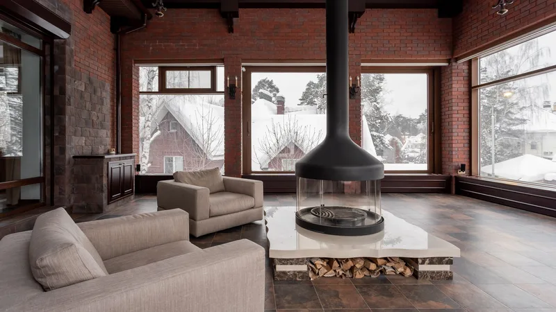
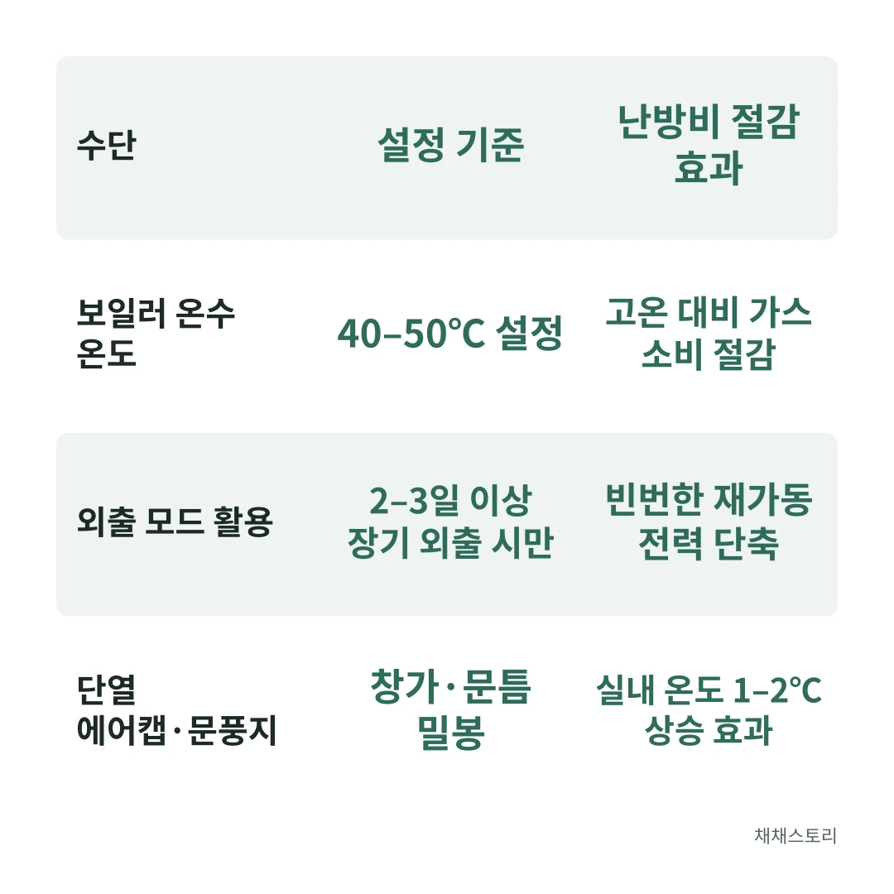
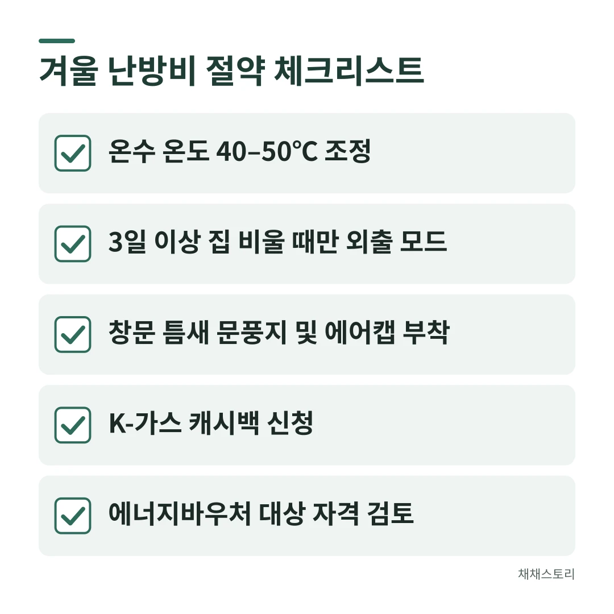

겨울철 난방비 고지서를 받아 들 때 부담을 줄이는 핵심은 보일러의 불필요한 고온 가열을 막고 실내 온기를 가두는 조치입니다. 온수 온도를 40도에서 50도 수준으로 조정하고 집안 단열을 보강하면 가스 소비를 줄이는 데 실질적인 도움을 받게 됩니다. 정부 및 관련 기관에서 제공하는 환급 혜택까지 함께 챙기면 겨울철 생활비를 꽤 아낄 수 있습니다.

계절이 바뀌면서 본격적인 한파가 시작되면 집 안의 온도를 올리는 일에만 집중하기 쉽습니다. 그러나 무작정 난방 온도를 높이기보다 보일러 가동 원리를 이해하고 에너지 손실 경로를 차단하는 접근이 훨씬 경제적입니다.
도시가스 사용량 중에서 상당 부분을 차지하는 요소가 바로 온수 가열입니다. 보일러의 온수 설정을 '고온'이나 60도 이상으로 지정해 두면 물을 끓이기 위해 보일러가 최대 출력으로 가동하면서 가스 소비가 급증합니다. 평소 씻거나 설거지를 할 때 사용하는 온수는 40도에서 45도 사이로 맞춰도 충분히 따뜻합니다. 최고 온도를 살짝 낮추는 것만으로도 연료 절감 효과를 체감하게 됩니다.
외출할 때 보일러를 조작하는 방식도 체크해 봐야 합니다. 수시간 정도 짧게 집을 비울 때 보일러를 완전히 꺼버리면 식어버린 방바닥과 실내 공기를 다시 데우는 과정에서 더 많은 에너지가 소모됩니다. 외출 시에는 현재 설정 온도보다 2도에서 3도 정도 낮춰 두거나 예약 난방 기능을 활용하는 방식이 유리합니다.
보일러 제어기 작동 체계나 구체적인 조절 기준이 궁금하다면 겨울철 난방비 절약 보일러 설정법, 외출 모드와 온수 온도 정리 문서를 함께 참고하면 도음이 됩니다.
각 가정마다 주거 환경과 보일러 모델이 다르므로 난방 조치를 시행할 때는 항목별 특성을 제대로 알아두어야 합니다. 잘못된 설정이나 무조건적인 전원 차단은 오히려 난방비 증가로 이어지기도 합니다.
| 난방 조치 항목 | 권장 설정 및 실행 기준 | 주요 절감 원리 및 주의사항 |
|---|---|---|
| 온수 온도 조절 | 40℃ – 50℃ 유지 | 최고 가열 출력을 방지하여 가스 소모 단축 |
| 외출 시 보일러 상태 | 평소 온도보다 2–3℃ 낮춤 | 바닥 냉각을 막아 재가동 시 급격한 가스 사용 방지 |
| 외출 모드 기능 사용 | 3일 이상의 장기 외출 시 적용 | 동파 방지 최소 가동 모드로 짧은 외출 시 유동성 저하 |
| 단열 에어캡·문풍지 | 창호 틈새 및 유리면 밀봉 | 외풍 차단으로 실내 열 손실 30% 내외 감소 |
| 밸브 개폐 조절 | 안 쓰는 방 밸브 70% 이상 닫음 | 사용 공간 집중 난방 (완전 차단 시 동파 주의) |
위 비교 내용처럼 외출 모드는 외출 기간에 따라 선택을 달리해야 합니다. 며칠씩 집을 비우는 장기 외출이 아닌 일상적인 출퇴근 상황이라면 설정 온도를 살짝 낮춰 두는 편이 내부 온기 유지에 훨씬 효과적입니다.
보일러를 효율적으로 켜두더라도 창문이나 문틈으로 온기가 빠져나간다면 난방 효율은 떨어질 수밖에 없습니다. 열 손실이 가장 빈번하게 일어나는 공간은 창문 유리와 틈새입니다.
유리면에 이른바 '뽁뽁이'로 불리는 단열 에어캡을 붙이면 유리 표면을 통한 열전도를 줄여 실내 온도를 1도에서 2도가량 올려주는 효과를 얻습니다. 창틀 틈새에는 풍지판이나 문풍지를 부착해 외부 찬 바람이 들어오는 길목을 막아주는 것이 기본입니다.
거실과 침실 창가 쪽에 두꺼운 암막 커튼을 바닥까지 내려오도록 길게 설치하는 방법도 권장됩니다. 커튼이 공기층을 형성하면서 창가에서 내려오는 찬 기운을 멈춰 세우기 때문입니다. 현관문이나 베란다로 연결되는 문 틈새 역시 방풍 덮개를 활용해 세밀하게 밀봉하면 실내 온기를 일정하게 유지할 수 있습니다.

실내 단열과 보일러 조작을 이행했다면 정부와 관련 공공기관에서 시행하는 에너지 지원 프로그램을 신청해야 합니다. 가장 대표적인 제도가 주택난방용 도시가스 사용자를 대상으로 하는 캐시백 사업입니다.
전년 동기간 대비 도시가스 사용량을 일정 비율 이상 줄이면 절감된 양에 따라 현금으로 환급해 주는 제도입니다. 대상에 해당하는 가구라면 공식 접수처인 한국가스공사 K-가스 캐시백 사이트를 방문해 신청을 완료해야 혜택을 받게 됩니다. 신청 절차나 세부 조건에 관해서는 겨울철 난방비 절약 위한 도시가스 캐시백 신청과 보일러 설정법을 통해 상세히 파악해 볼 수 있습니다.
| 제도 명칭 | 주관 및 공식 안내처 | 지원 대상 및 주요 내용 |
|---|---|---|
| 도시가스 절약 캐시백 | 한국가스공사 K-가스 캐시백 | 주택난방용 도시가스 사용자 중 사용량 절감 가구 |
| 에너지바우처 지원 | 한국에너지공단 에너지바우처 | 생계·의료·주거·교육 급여 수급 가점 세대 차감 지원 |
취약계층이나 소득 기준을 충족하는 가구라면 한국에너지공단 에너지바우처를 통해 전기, 도시가스, 지역난방 요금을 직접 차감받거나 국민행복카드로 에너지원을 구매하는 지원을 받을 수 있습니다. 매년 신청 조건과 접수 일정이 개편되므로 이용하기 전 반드시 공식 공고문을 다시 확인해야 합니다.
난방비 지출을 줄이기 위해 지금 당장 집 안에서 실행해볼 수 있는 순서별 점검 항목입니다.
기본적인 습관 변경과 단열 보강을 병행하면 난방비 부담을 한결 가볍게 만들 수 있습니다.
외출 시간이 몇 시간 정도로 짧다면 보일러를 완전히 끄는 것보다 설정 온도를 2도에서 3도 낮추는 편이 유리합니다. 차갑게 식어버린 방 바닥을 다시 가열하는 과정에서 훨씬 많은 가스가 소모되기 때문입니다.
외출 모드는 최소한의 동파 방지를 위해 보일러를 주기적으로만 작동시키는 기능입니다. 따라서 주말 여행이나 출장처럼 3일 이상 오랫동안 집을 비울 때 사용하는 것이 바람직합니다.

주택난방용 도시가스를 사용하는 개별난방 및 중앙난방 가구라면 신청 대상에 포함됩니다. 다만 과거 사용량 데이터가 조회되어야 절감율을 계산할 수 있으므로, 이사 등으로 고객식별번호가 달라진 경우 공식 홈페이지의 안내 사항을 미리 대조해보는 과정이 필요합니다. 지원 자격과 접수 일정은 연도마다 달라질 수 있으니 최신 공고를 확인하는 것이 안전합니다.
| 슬롯 | 위치 | 기준 블록 | 근거 |
|---|---|---|---|
🖼 이미지 1 news-2026-20261123-8m6w-01-intro.webp | 문단 1 뒤 | P · 겨울철 난방비 고지서를 받아 들 때 부담을 줄이는 핵심은 보일러의 불필요 | 도입부 첫 문단 뒤(히어로) |
| 📢 광고 1 | 문단 7 앞 | H2 · 난방 요인별 절감 조치 및 특성 비교 | H2 앞 · 직전 광고와 — 간격 |
🖼 이미지 2 news-2026-20261123-8m6w-02-middle.webp | 문단 15 앞 | H2 · 현금으로 돌려받는 도시가스 캐시백 및 지원제도 | 글자수 기준 중간에 가장 가까운 소제목 앞 |
| 📢 광고 2 | 문단 20 앞 | H2 · 본 한파 전 점검할 난방비 절약 체크리스트 | H2 앞 · 직전 광고와 1239자 간격 |
🖼 이미지 3 news-2026-20261123-8m6w-03-end.webp | 문단 29 앞 | P · 주택난방용 도시가스를 사용하는 개별난방 및 중앙난방 가구라면 신청 대상에 | 마지막 문단 앞(마무리) |